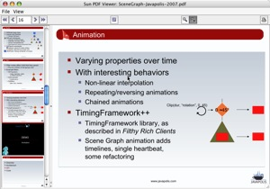
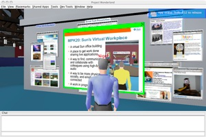

demo | screenshots | download binary jar | download source zip | javadocs | examples

The demo viewer app (click for bigger image)

Experimental Project Wonderland support (click for bigger image)
The PDF Renderer is just what the name implies: an open source, all Java library which renders PDF documents to the screen using Java2D. Typically this means drawing into a Swing panel, but it could also draw to other Graphics2D implementations. We hope you will come up with cool things to do with it that we never thought of.
PDF is one of the core file formats of the Internet, so it is very important for Java programmers to be able to both read and write PDFs. Great open source libraries like iText have long handled the writing half, but until now there has not been a good way to read PDFs using open source Java libraries. It could be used to draw on top of PDFs, share them over a network, convert PDFs to PNG images, or maybe even project PDFs into a 3D scene.
Note, the PDFRenderer does not generate PDF documents, instead it views them. To generate PDFs you should try iText or one of many other great Java libraries.
Some ideas to get you started:
The PDF Renderer requires Java 5 (Java SE 1.5). It has no other dependencies
Since this is the first release we don't have much content yet. You can download the code using CVS, read the javadocs, or try out the viewer demo. Also, please join the dev or user's mailing list.
Our examples page has some sample code to opening PDFs in Swing, as an image, and other basic usages.
There are several areas that need work. The PDF Renderer currently supports a subset 1.4 of the PDF specification. It does not support transparency, various font encodings or fill-in forms. These are the first features we hope the community will tackle.
Since the PDF Render is part of SwingLabs it follows the same rules. First, SwingLabs projects require the use of the SCA (Sun Contributor Agreement) for any code contributions greater than 20 lines in length. This agreement gives Sun joint copyright on the code (so we can do things like change the license and indemnify customers). In addition, by signing this agreement you certify that the code you submit to the project is code you own the copyright to and code you have the right to submit.
In short, you must sign the SCA and return it to us in order to get commit rights to CVS. However, you do not have to sign anything to download the code and use it in your own programs. The SwingLabs PDF Renderer is licensed under the LGPL
You can find out more about signing the SCA at the SCA project or download the SCA itself .
In 2003, researchers at Sun Labs developed the PDF Renderer as part of an audio collaboration tool, Sun(TM) Labs Meeting Suite, which is used extensively at Sun for distributed meetings. Meeting Suite was designed to allow people to give presentations created with OpenOffice Now, Sun is excited to release this code under the LGPL as part of SwingLabs. This release will benefit the Java ecosystem and also let the open source community improve the implementation to support the latest PDF features.
{kind=link}
{kind=link}